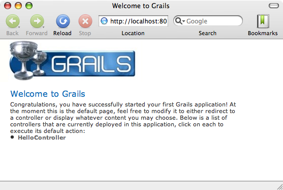

Grails를 시작하고 작동시키기 위해서 처음해야 하는 일은 배포본을 설치하는 것이다. 천천히 다음 단계들을 따라하라.
- Grails의 바이너리 배포본을 다운 받고, 원하는 위치에 다운받은 zip파일의 압축을 푼다.
- zip파일의 압축을 푼곳으로 GRAILS_HOME이라는 환경변수를 설정한다.
- Unix/Linux 환경에서는 일반적으로 프로필 파일에
export GRAILS_HOME=/path/to/grails 와 같은 것을 추가시키는 방법을 사용한다.
- 윈도우 환경에서는 일반적으로 내
컴퓨터/속성/고급/환경변수 에서 설정한다.
- 이제 당신의
PATH 변수에 Grails의 bin 디렉토리를 설정해야한다.
- Unix/Linux 환경에서는
export PATH="$PATH:$GRAILS_HOME/bin"를 실행하는 것으로 설정할 수 있다.
- 윈도우즈 환경에서는 내 컴퓨터/속성/환경변수에 있는
Path 환경변수를 수정함으로써 설정 할 수 있다.
만약 Grails가 정상적으로 동작한다면 당신은 터미널 윈도우에서 grails를 타이핑하고서, 다음과 같은 결과물을 볼 수 있다.
Welcome to Grails 1.0 - http://grails.org/
Licensed under Apache Standard License 2.0
Grails home is set to: /Developer/grails-1.0
No script name specified. Use 'grails help' for more info
Grails 어플리케이션을 생성하려면 먼저 다음과 같은 grails 명령어의 사용법에 익숙해질 필요가 있다.이제 create-app 명령어를 사용하여 어플리케이션을 생성할 수 있다.tc.
grails create-app helloworld
이 명령어는 현재 디렉토리 위치에 프로젝트를 담고있는 새로운 디렉토리를 만들어 줄 것이다. 당신은 이제 터미널에서 이 디렉토리를 돌아다녀야 한다:
cd helloworld
전형적인 "hello world!" 예제 프로그램을 구현하기 위해서는 create-controller 명령어를 사용한다.
grails create-controller hello
이것은 grails-app/controllers 디렉토리 안에 HelloController.groovy 라는 새로운 컨트롤러를 생성할 것이다(더 많은 정보를 원한다면 컨트롤러 절을 보라.)컨트롤러는 웹 요청들을 처리할 수 있다. 그리고 다음과 같이 구현하여 "hello world!"라는 메시지를 출력할 수 있다.class HelloController { def world = {
render "Hello World!"
}
}
grails run-app
이 명령어로 8080포트로 서버를 실행시키고나서 http://localhost:8080/helloworld 와 같은 URL로 해당 어플리케이션에 접속할 수 있다.결과는 다음의 스크린샷과 같이 나올 것이다.이 것은 web-app/index.gsp 로 렌더링된 Grails의 소개페이지이다. 이 페이지에는 컨트롤러들이 보여질 것이고 컨트롤러의 링크를 클릭하면 브라우저 윈도우에 "Hello World!"라고 출력되는 것을 보게 될 것이다.
IntelliJ IDEA
현재 굉장히 성숙하고, 풍부한 기능을 가진 Groovy&Grails IDE는 IntelliJ IDEA 7.0 과 JetGroovy 플러그인이다. Grails 개발팀은 커다란 프로젝트를 위해서 다른 IDE 환경을 넘어선 IDEA를 추천한다.TextMate
Grails는 단순함에 초첨이 맞춰져 있기 때문에 단순한 텍스트 편집기를 사용하는 것도 가능하다. Mac의 TextMate 에는 우수한 Groovy/Grails 번들을 가졌다. Texmate bundles SVN에서 이용할 수 있다.Eclipse
Eclipse 위해서 여기에 또 문법 강조와 코드 완성등을 해주는 Groovy Eclipse Plugin 이 있다.
이 Groovy 이클립스 플러그인은 자주 변한다. 그 변화의 자세한 사항은 Grails 위키에서 알 수 있다.
Grails는 자동적으로 이클립스의 .project 파일과 classpath 파일을 만든다. 그리고 "Package Explorer"창에서 오른쪽 버튼을 클릭을 하여 "Import"를 선택한 후 "Existing projext into Workspace"에서 그레일즈 프로젝트가 있는 곳을 "Browse"하는 것으로 Grails 프로젝트를 추가시킬 수 있다.그리고 "Finish"를 누른 다음에 나오는 "Ok"를 클릭하면 프로젝트는 설치된다.또한 Grails는 적당한 이클립스 실행 설정을 자동으로 셋업한다. 이것은 이클립스의 "Run"메뉴를 통해서 접근이 가능하다.
Grails는 "설정보다 관례"를 사용한다. 이 것은 이름과 파일의 위치를 명시적으로 설정하는 하지 않고 Grails가 제공하는 디렉토리 구조에 익숙해져야 하는 것을 의미한다.여기에 Grails의 상세 내역과 관련된 링크가 있다.
grails-app - 그루비 소스코드의 최상위 레벨의 디렉토리scripts - Gant 스크립트.src - 지원 소스 코드
groovy - 기타 Groovy 소스java - 기타 Java 소스
test - 단위/통합 테스트.
Grails 어플리케이션은 run-app 명령어를 사용해서 Jetty 서버에서 돌아갈 수 있다. Jetty서버는 기본적으로 8080포트를 사용한다.server.port 인자를 이용해서 다른 포트를 사용할 수 있다.grails -Dserver.port=8090 run-app
create-*형식의 명령어들은 test/integration 디렉토리에 통합 테스트들을 자동적으로 만든다. 물론 테스트 에 대한 장에서 설명하는 정보와 테스트 로직에 부합하도록 내용을 채우는 일은 당신의 몫이다. 하지만 만약 테스트를 실행하기를 원한다면 당신은 다음과 같이 test-app 명령어를 사용할 수 있다.Grails는 test-app 명령어와 동일하게 동작하는 Ant의 build.xml 파일을 자동으로 만들어준다.
이것을 통해 CruiseControl같은 지속적 통합(continuous integration) 플랫폼을 유용하게 사용할 수 있다Grails 어플리케이션은 WAR(Web Application Archieves) 파일로 설치할 수 있다. war 명령어를 사용하여 만들 수 있다:프로젝트 루트에 WAR파일이 생성될 것이다. 이제 각 컨테이너의 사용법에 따라 설치할 수 있다.
결코 Grails의 run-app 명령을 사용하여 실제로 서비스하지 말아라. Grails의 이 명령어는 서버 성능이나 확장성이 중요한 런타임에도 자동으로 reload 하도록 설정돼 있다.
Grails를 설치할때에는 컨테이너의 JVM에 충분히 메모리를 할당하고 -server 옵션을 사용해야 한다. 다음은 권장하는 VM 옵션들이다.Grails는 다음과 같이 꽤 많은 컨테이너들을 지원한다.
- Tomcat 5.5
- Tomcat 6.0
- GlassFish v1 (Sun AS 9.0)
- GlassFish v2 (Sun AS 9.1)
- Sun App Server 8.2
- Websphere 6.1
- Websphere 5.1
- Resin 3.2
- Oracle AS
- JBoss 4.2
- Jetty 6.1
- Jetty 5
- Weblogic 7/8/9/10
몇몇 컨테이너들는 버그가 있지만 대부분의 경우에는 잘 동작한다. 설치에 관한 문제는 Grails 위키에서 찾을 수 있다.Some containers have bugs however, which in most cases can be worked around. A list of known deployment issues can be found on the Grails wiki.Grails는 create-controller, create-domain-class 등과 같은 편리한 명령어를 지원한다. 이 것들은 컨트롤러를 생성하거나 다른 타입의 아티펙트들을 만들어줄 것이다.
여기에 있는 것이 전부가 아니다. IDE나 익숙한 텍스트 편집기를 바로 사용하는 것도 쉽다.
예를 들어 다음과 같이 어플리케이션을 만들 때 기본적으로 필요한 도메인 모델을 만든다:grails create-domain-class book
create-* 와 같은 명령어가 있다. 이 것들은 명령줄 레퍼런스 가이드에서 찾아볼 수 있다.
Grails를 시작할 때 어플리케이션의 뼈대를 만들어주는 스케폴드 라는 특징은 매우 유용하다. generate-* 명령어들 중에서 하나를 사용하여 만들 수 있고 generate-all 을 사용하면 관계된 컨트롤러 와 뷰 가 생성될 것이다.